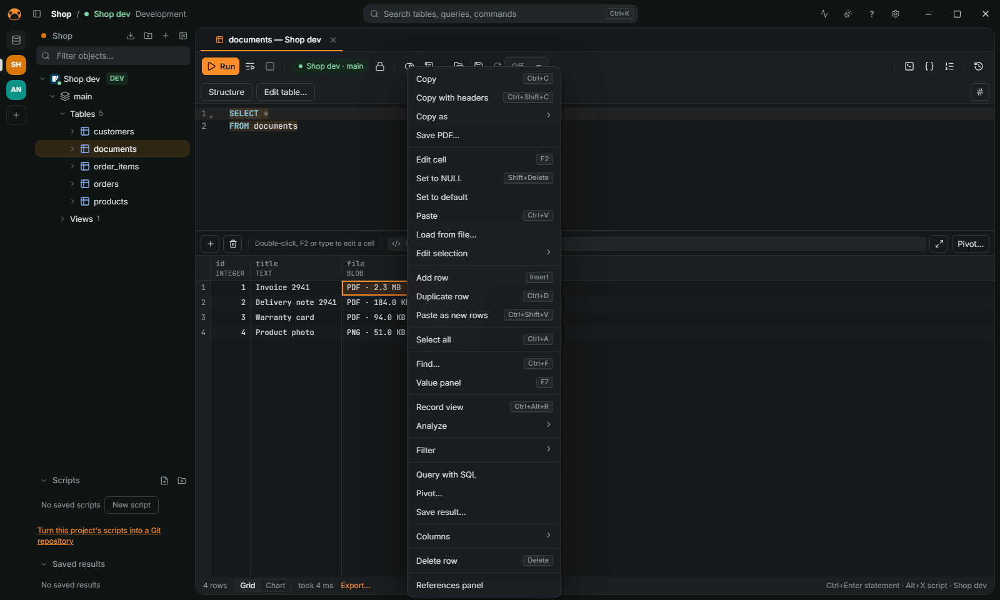

Eseguire query e leggere i risultati

Eseguire un'istruzione
- Fai doppio clic su una connessione (o su una tabella) per aprire un editor SQL.
- Scrivi un'istruzione.
Ctrl+Spacecompleta parole chiave, tabelle e colonne; dopoJOINti propone le tabelle collegate tramite le chiavi esterne. - Premi
Ctrl+Enterper eseguire l'istruzione sotto il cursore (o la selezione), oppureAlt+Xper eseguire tutto lo script.Ctrl+\esegue in una nuova scheda di risultati. Ctrl+.annulla un'istruzione in esecuzione.
Le istruzioni finiscono con un ;, o con una riga vuota prima di una parola che ne inizia una nuova. Quando un'istruzione fallisce, l'errore è segnalato nel testo e il pannello degli errori offre Vai all'errore. Ctrl+Shift+F formatta lo script; Ctrl+S lo salva come file .sql.
Parametri e variabili
:id e ? in un'istruzione, e le variabili ${name}, vengono chiesti in una finestra prima dell'esecuzione e conservati in un pannello Variabili. Il valore di una ${name} entra nell'SQL così com'è, quindi un'istruzione con variabili viene controllata di nuovo una volta compilata (vedi Sicurezza).
Leggere i risultati
- La griglia legge le righe una pagina alla volta. Fai clic sull'intestazione di una colonna per ordinare: scrive l'
ORDER BYnell'editor ed esegue di nuovo; un secondo clic lo inverte, un terzo rimette quello della query. - Apri una tabella dal navigatore per sfogliarla; un
WHEREscritto nell'editor la filtra. F7apre il pannello dei valori: testo lungo, JSON e XML formattati, esadecimale e immagini dalle colonne binarie.- Una cella che contiene un file (un PDF, un'immagine, uno ZIP e altri, riconosciuti dai loro byte) mostra tipo e dimensione, come
PDF · 2.3 MB. Il menu della griglia offre Salva PDF… (o il tipo del file) e, su più celle di una colonna, Salva N file in una cartella…. Il pannello dei valori ha lo stesso pulsante. Una cella di testo che contiene un file (un URLdata:, base64 o esadecimale) non ha etichetta nella griglia, perché servirebbe leggere ogni cella di testo per riconoscerla: il menu della griglia e il pannello dei valori la mostrano, per le celle che selezioni. Ctrl+Fcerca nelle righe caricate;Ctrl+Shift+Ccopia la selezione con le intestazioni.- Un risultato può passare dalla griglia a un grafico dalla barra di stato.

Capire una query lenta
Premi Ctrl+Shift+E su un'istruzione per vederne il piano. Vedi FEATURES.md.
Altro
Script salvati, snippet, cronologia, modalità vim, esecuzione di uno script su più connessioni, query builder e analisi dei dati sono in FEATURES.md. La griglia dei risultati è in FEATURES.md.